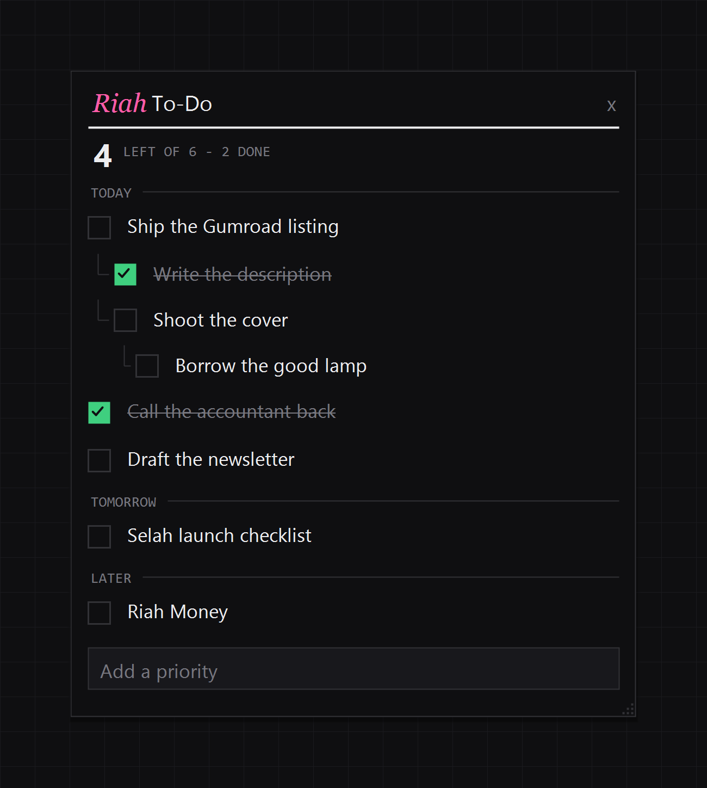
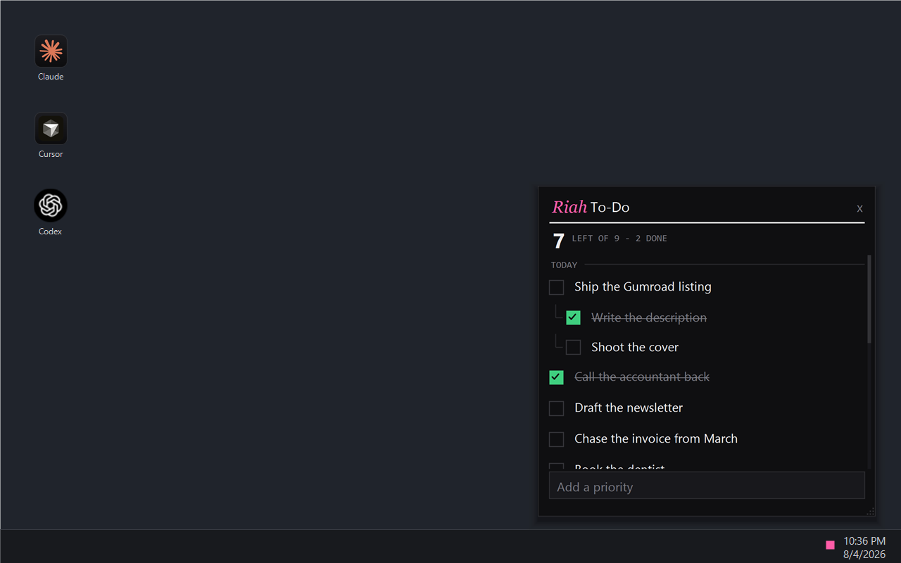

By the Windows clock
The to-do list you’ll actually open.
It sits by your clock. One click and your day is in front of you. Click away and it’s out of your face.
Free · about a minute


The problem
Twenty apps. Opened twice.
We all want to be organized. We’ve all downloaded twenty different to-do apps to prove it.
And most of us never opened one of them twice. Not because we stopped caring, but because opening it was a chore. Another window, another tab, another thing to go and find.
So the list goes stale inside a week, and your whole day moves back into your head.
The thing
A note by your clock.
Riah To-Do lives next to your battery and your wifi. Click it and today’s list is right there, where you left it. Check something off. Click away and it’s gone.
No window to keep open. Nothing to switch to. That’s why you’ll still be using it in March.
How it works
About a minute.
- Download it and drop the folder wherever you like.
- Double-click Start Riah To-Do.
- An icon appears by your clock. Click it and start typing.
What it does
Only what’s left.
Checked-off tasks clear themselves. Two hours after you check something off, it leaves the list (adjustable, of course). What’s in front of you is only ever what’s actually left.
Everything you finish lands in your Obsidian vault. Point it at your second brain and each day writes itself into a dated note, steps indented under their task.
Nothing gets lost overnight. Whatever you didn’t finish is waiting for you tomorrow. Sub-threads stay nested through reboots — the last good list is kept beside the live one.
Steps under steps. Break a task into steps, and those steps into steps, six levels deep when a job needs it.
It stays where you put it. Move it, resize it, and it opens exactly there every time.
Usual questions
Straight answers.
- Is my list private?
- It’s one small JSON file on your own PC and it stays there. Nothing to sign up for, nothing sent anywhere.
- Am I locked in?
- No. Your whole list is that one file. Copy it and you’ve got everything.
- Do I need to install a pile of stuff first?
- No. It runs on what Windows already ships with.
Price
Free. Yours to keep.
MIT licensed.
Windows 10 and 11